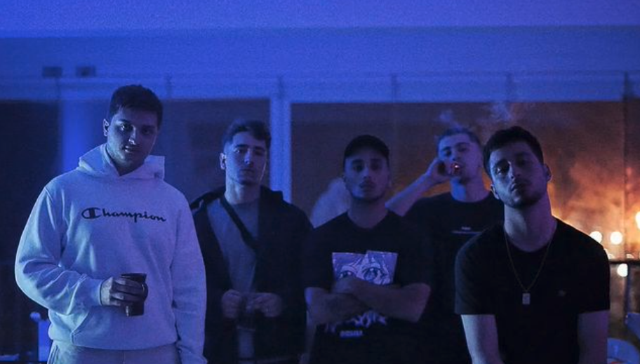

Loud Muzik somos un grupo de artistas dedicados a la música, el diseño y el mundo audiovisual.
Con este proyecto, unimos nuestros conocimientos para poder ayudar a nuestros clientes en sacar sus proyectos musicales desde la producción de la intrumental y las voces hasta los diseños para plataformas digitales o videoclips adaptandonos a todo tipo de presupuesto.
Servicios
Desde Loud Muzik ofrecemos distintos servicios a nuestros clientes, bien sea en el ámbito musical, gráfico o audiovisual.
Al ser un grupo formado por varios integrantes dedicados a las distintas disciplinas, ofrecemos precios asequibles para todos los bolsillos y adaptados a las necesidades de cada cliente. Teniendo a disposición varios estudios de grabación, productores, ingenieros de sonido, diseñadores y filmmakers.
Clientes
En Loud Muzik hemos trabajado para artistas como Sosad, Selecto Picasso, Ikaro Madrid, NL... En proyectos de todo tipo.
A continuación mostramos un ejemplo de videoclip realizado por nuestro filmmaker Alberto, bajo el seudónimo de "Uppercut", Producido por Fulston y grabado y editado por este mismo.
Contamos con una gran cantidad de proyectos a las espaldas, contando incluso con discos de oro en canciones en las que han colaborado nuestro equipo bien como productores, filmmakers o realizando en mix and master.
